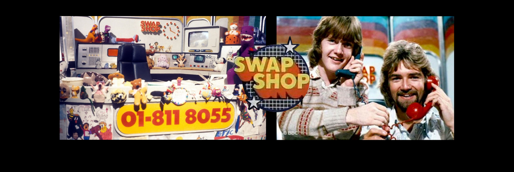
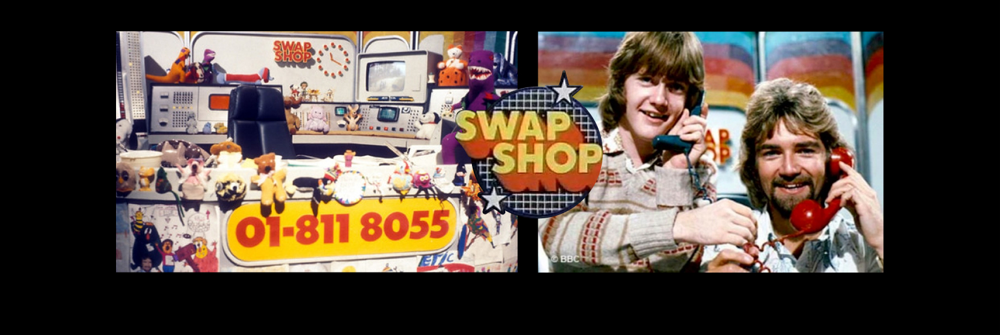

The Best Quiz of 2020
Prologue
It was three months into lockdown. Our resident company entertainer was away on holiday, and my moment had finally come. Work asked if i wanted to run something for the office...
I played it cool, but this was all I'd ever wanted.
All these months working from home had been taking it's toll. Every waking moment on hangouts, desperately trying to pay attention, enough was enough.
Using Menti, a survey tool for business types trying to spice up their dull presentations. I made a quiz to remind everyone of the fun parts of work. Players vote and if you're in the majority you got a point. Everyone was so engaged with my dumb surveys they forgot to keep track of their points... I was the only winner that day.

The Begining
More time in lockdown passed...
The remnants of my old life had long since gone away, everything was empty. When suddenly the sound of slack rang through my bedroom office, like the bat signal over the streets of Gotham. Work needed a hero. They needed me. Could I, Jake Sharpe, make a mandatory all–day remote company meeting bearable?
It was an impossible task, but this time I had budget for prizes and unlimited free time.
 

Preying on 70’s nostalgia like I was there
Inspired by one of my all time heroes, tv presenter Noel Edmonds and Swap Shop. I created a short skit and shared it with some colleagues. We thought it was alright, so we started filming scenes with me dressed in a suit and bowtie around East London.
I wanted to harness that 70s quiz show nostalgia and create a faux sense of community to remind everyone of the good old days. Unfortunately I wasn’t actually alive in the 70s, but if I was I’d be sitting in a pretty cushty director role by now.
As the threads started to come together, something clicked, setting the tone for the entire quiz. The task was simple. Create an intro so overwhelming that my colleagues, expecting a day of company presentations, would be forced to pay attention. Like a sudden punch to the face or an episode Spongebob Squarepants.
ACTIVITY I : The Connections Round
An endless barrage of online coffees, remote all hands' and 1-1s had left us feeling disconnected. How could I, a humble boy from the South of England, foster real feelings of connection in this post touch world.
Using the game Linkee as inspiration, I hid random images in the presenter's slides. Players had to find the connections and feel a little more connected themselves.
At the time I'd been listening to a lot of Barry White and really loved his spoken introductions. For some reason I thought it was a good idea to try and explain the rules of the game in a similar way, with the medium of song. I'll be thanking royalty free attribution not required music at the Grammys.
ACTIVITY II : The Fashion Round
It was the first dry weekend since lockdown had eased and we needed an intro yesterday. I grabbed my nearest bin bag, a camera and some friends for protection. One magical day of people staring at me in the street, and this weird Enter the void pastiche was born. It helped get everyone out of that post-lunch slump and might even make me look interesting on Hinge.
A day of quietly pretending you're paying attention was fast approaching. I knew what my colleagues would need; creativity, collaboration and strict judgement criteria. Inspired by the spectacle that was 'Trash Dinosaur' by the Asana design team. The Fashion Round had players in teams of ten, create disgusting heinous crimes against fashion, for senior members of the team. The creations were then judged and publicly shamed by myself.
ACTIVITY III : The Internet Round
It was the first dry weekend since lockdown eased, we needed an intro to the fashion round. One strange day of filming rubbish later and this weird Enter the void pastiche was born. It might help me look more interesting on Hinge though.
As the threads started to come together, something clicked, setting the tone for the entire quiz. The task was simple, create something so baffling that my colleagues, expecting a day of dry company presentations, would be so overwhelmed that they would have to pay attention. Like getting punched in the face at 09:30.